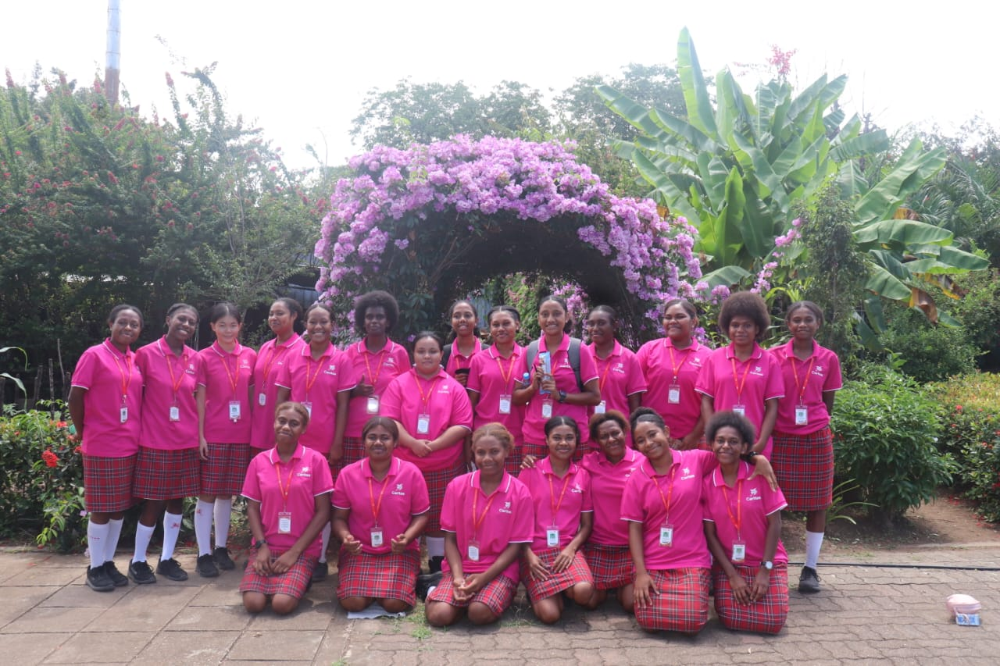
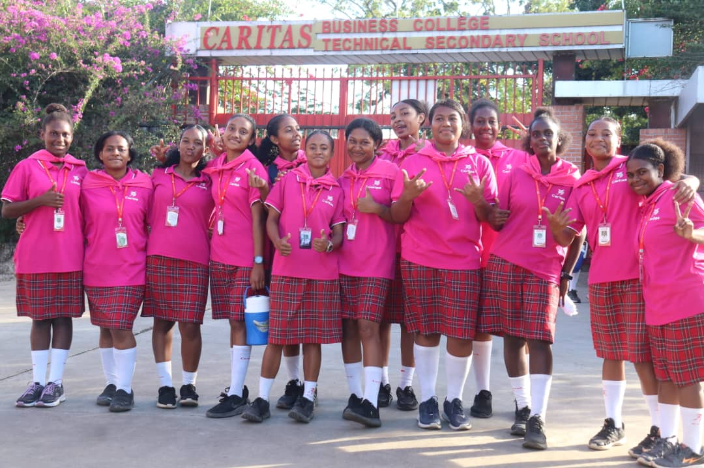

Caritas Technical Secondary School · Grade 10 Math & Grade 12 A/Math
Enjoy the Remedial with Mr. Wii!
Seventeen years of real Grade 10 Mathematics and Grade 12 Advanced Mathematics exam papers, marked-up study notes and exam coaching — free to download, built for students getting ready for the National Exams.


Real exam papers, not guesses
Actual past National Exam papers going back to 2007, so you practise on the real thing instead of random questions.
Mark your own progress
Every paper has a built-in tally — enter your score after marking and watch your bar fill up, saved right on your device.
Always free, always open
No sign-up, no fees. Download, print, and work through papers at your own pace, at home or in the classroom.
Latest updates
See all updates →-
22 June 2026
2026 National Exam Questions
A first look at how this year's Grade 10 Mathematics and Grade 12 Advanced Mathematics papers are shaping up, and what to prioritise in your revision.
-
29 May 2026
Top 10 Exam Questions
The ten question types that show up almost every year in Grade 10 Mathematics and Grade 12 Advanced Mathematics — worth mastering first.
Exam coaching tip
Advanced Mathematics
- Always keep an “exam tally” — mark every practice paper and track your score over time.
- Manage your time and formulas — know your formula sheet cold before exam day.
Jump straight in
Have a question about an exam paper?
This site is written and maintained by Mr. Larson Wii for CTSS students. If a link is broken or you'd like a paper that isn't listed yet, get in touch.
Contact Mr. Wii